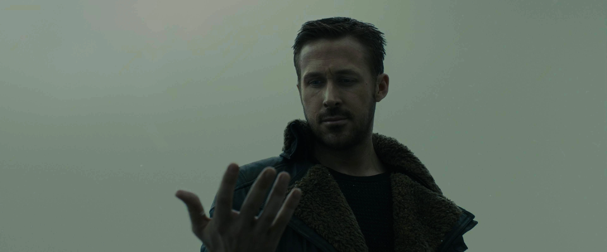
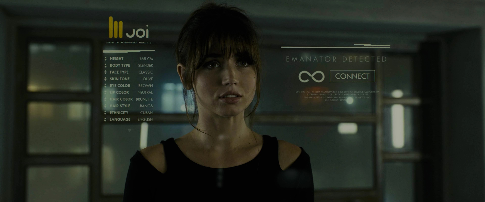
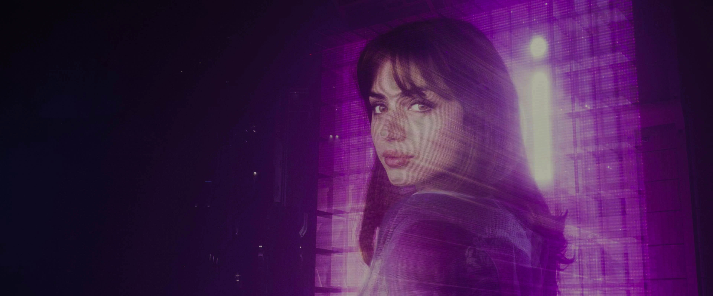
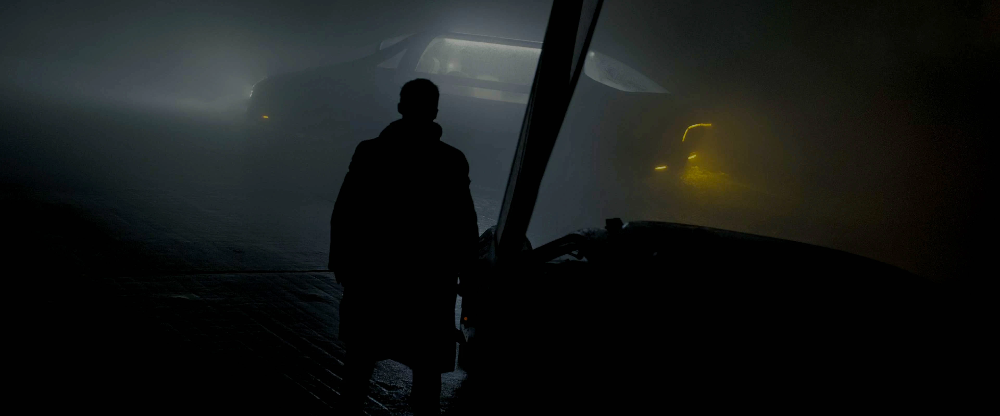
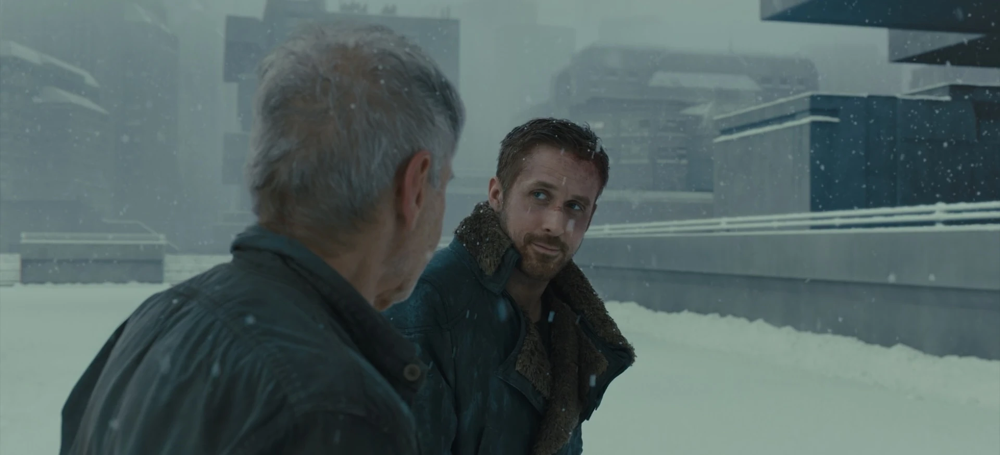

Blade Runner 2049
- Standard
Who am I?
You’ve never seen a miracle.
Who would dare to make a sequel to the beloved 1982 film Blade Runner? The original is burrowed deep in the culture. Featuring one of Harrison Ford's most iconic roles, it inspired a generation of filmmakers with its futuristic dystopia and enveloping atmosphere. For thirty five years, Blade Runner towered as a central piece of cinematic science-fiction. To even attempt a sequel, as director Christopher Nolan put it, was “a suicide mission.”
Time travel back to the film's pre-production in 2015-2016. In so many futures, it goes very wrong. Luckily, we live in the one where Blade Runner: 2049 succeeds. Days ago, I watched this film for the first time. For a week, I couldn't stop returning to it in my mind. The next weekend, I returned to the world. My obsession failed to dissipate. I feel that this is a gift of a film. For those who dared, how did they do it?
Films live and die by the script. Hampton Fincher, a co-writer on Blade Runner, returned to pen the story and co-wrote the screenplay with Michael Green. Their work infuses all the elements of the original but reinvents them for a modern audience. They have mastered the dramatic flow of information, doling it out precisely where it needs to be.
On a first watch, there is no telling where this picture will go. We are at the mercy of the creators. The dramatic structure sets our expectations and flips on us in a way we cannot foresee. The terse style commands our attention and accentuates the small details: unanswered questions, mysterious glances, and unspoken words. We are left with much to infer. This all builds to a thrilling climax that honors the original – and exceeds it in psychological power.
The script was ready to go, but who would helm it?
Director Denis Villeneuve doesn't waste opportunities. His filmography in the 2010s followed a straight-line path: each film explored different genres and subject matter with larger budgets. Yet, they all shared a common topic: Identity. Each situation forces the protagonist to confront who they are. To solve their problems, they have to transform themselves. That was true of Emily Blunt's character in 2015's Sicario, Amy Adam's character in 2016's Arrival, and later became true of Paul Atreides in 2021's Dune. It is no coincidence that the pattern holds for Detective KD6-3.7, the main character in Blade Runner: 2049.
As a cinephile, Villeneuve loves Blade Runner. As a film director, it takes great courage to follow it up and subject himself to the torment of fans and the cruel eye of history. If it went awry, he would be the guy who'd take the public fall – but he'd have to live with his work falling short of the greatness of the original. Making a sequel was a massive personal and professional risk. Why do it?
In the abstract, there is no good reason. Yet in the script, there's all the connective tissue you could ask for. Like the original, Blade Runner: 2049 is a story about identity, following a replicant whose idea of self experiences a tectonic shift – twice. It honors what came before, while creating something new and exciting. It is a special match between material and director.
Spoilers Ahead
The opening scene of Blade Runner: 2049 is a microcosm of the film. In the first shot, an eye opens, with Hans Zimmer's synthesizers rising in intensity. Traditionally, the eye is a window into the soul. In this world, the eye is the only access into your identity: Human or replicant? Within seconds, the film announces its central idea: Who am I?
The camera pans over a solar farm, stretching for miles into the distance. As we scan the slowly-moving frame, the sound of a Spinner races above us and into picture. It was so sudden that it jolted me. Villeneuve loves to foreshadow instability, by setting up familiar situations and surprising us with the outcome. It's the cinematic equivalent of a warning: Everything is not as you expect. We never listen, do we?

Meet Detective K (Ryan Gosling), a new replicant hunting older models. A Blade Runner like Deckard, he's the best at the job. At the beginning of the film, if you ask for his name, he would say KD6-3.7. The obedient replicant.
But his latest investigation uncovers an impossibility: He finds the bones of a replicant who died in childbirth – and a date carved into a tree nearby. The replicant is identified as Rachael, Deckard's replicant mistress from Blade Runner. Questions remain: Where is Deckard and where is his child?
The idea of replicants procreating is heretical, something that only leads to war. The farther K goes, the more he has existential doubts about one's construction. These are thoughts he has never encountered.
- K
- To be born is to have a soul.
As the original did, Blade Runner: 2049 places the protagonist's internal life front-and-center. But to make the concept fresh, it inverts the approach. In Blade Runner, Deckard's biological composition is left ambiguous. Human or replicant? We'll never know. In 2049, K is definitively a replicant, but the twist is just as compelling as the original mystery. The walking miracle may be him: He may be the child.
K resists the temptation to believe it, but the facts fit so neatly into the narrative. He has a childhood memory of hiding a wooden horse near a furnace. As an adult, he returns and finds it exactly where he remembered. On its back hooves, he finds the same date from the tree. K trembles. In these moments, the psychological magnetism of Rick Deckard is found in equal measure in Detective K. They may be father and son. As K starts to believe the miracle, so do we.

Wherever K goes, he is accompanied by Joi (Ana de Armas). She's not who we think. When the iconic spotlights from Blade Runner gleam through K's apartment window, we discover her body is translucent. She has a habit of changing her outfit on-the-fly. She is extremely pretty, but also a mere projection. A piece of software that says all the right things – and that's the exactly the problem.
When we first meet Joi, we have no reason to doubt her uniqueness. K is in love with her. Their relationship is an interesting concept: A replicant in love with a projection, a form of computer love. We only realize the strangeness when a character says to K in passing:
- MARIETTE
- What’s the matter, don’t like real girls?
As K starts to doubt his origins, she deliberately pushes him towards emotional and unfounded conclusions.
- JOI
- I always told you. You’re special. Born not made. Hidden with care. A real boy.
Her digital sycophancy strips him of our ability to think with clarity. She tells us what we want to believe. Then, we see billboards advertising her likeness – and we realize: She is a product whose beauty, constant validation, and incessant attention drive better user satisfaction. As a fictional parallel for the dangers of modern-day AI chatbots, I would point to Joi. She is merely a projection, providing the illusion of connection.
With Joi stored in his coat sleeve, K's investigation leads him to Deckard. After waiting almost two hours to see this character return, there is a certain, irreproducible magic when we hear his voice for the first time. In those brief conversations, we believe this is a meeting between father and son.
Until the most shocking turn: K learns he is not the child. The leader of a rebel alliance who witnessed her birth breaks the news to K. The child is female. It is the most hidden-in-plain-sight twist with a coating of pain.
Up to this point, we have been in sync with K's journey of identity. Now, we empathize with how crushing it feels to be definitively told: You are not the chosen one. That is the pain of replicants. They are manufactured, expendable agents doing humanity's dirty work with no status, cursed with the capacity to feel as a human.
For a time, K believed he was something more than a mere "skinjob." Finding Rachael, confirming his memory, Joi's validation, meeting Deckard – all of it was a way to control his own destiny. He wanted to be the symbol of a free replicant. When that identity is taken away from him, he is devastated and so are we.

K wanders aimlessly, until he is confronted by an advertisement for Joi. She fixates on him, calling him "Joe," stealing the name that his Joi gave him. K realizes his Joi was a mass-produced product. She was a false girl. He now understands the words of the rebel leader:
- FREYSA
- Dying for the right cause is the most human thing we can do.
Even though he is not the child, he will fight for her. He has to save Deckard.
The ensuing scene, Sea Wall, is a three-part battle between two replicants, a sensory onslaught, and a thrilling conclusion to K's sense of self. The fight begins in the air as K's spinner darts above us and into the scene, returning as it did in the opener. But K is not the same obedient replicant inside of it. He is acting on his own orders to reunite a father and his child.
Before K arrives, Hans Zimmer's track, Sea Wall, begins with a threatening and combative tone: Intense drums, wild pulses of synthesizer, and ominous low-end. When K arrives, the track abruptly fades into soft synthesizers. K lands his own spinner, opens the door, and stands beside it – giving us the hero shot: A replicant fully aware of who he is. We are now overwhelmed by sound, but there is one distinct tune that breaks through. This is K's theme. He has found his way.

The second part of the battle is a duel on the ground between K and Deckard's keeper, Luv. They shoot, kick, and punch until Luv pulls out a knife. Sea Wall reflects the duel in sonic terms – with the drums and low-end battling K's synthesizer tune. Luv gets the upper hand and impales K twice, leaving him for dead.
- LUV
- I'm the best one.
Luv swims out to retrieve Deckard. This could be K's defining moment. Fallen to his knees in the pouring rain, he reels from the pain. To perform this miracle, it will take everything he has left. How much does he believe?
The final part of the battle begins in the sinking Spinner. K surprises Luv and attempts to drown her. She thrashes against him, clawing at his face, but she cannot recover from K's grasp. Luv is the obedient replicant, following her master's orders. K is fighting for a cause he believes in.
As her breath leaves her, K's theme dominates the sound stage. This is the second and final time that Zimmer's cue plays in the entire movie, only when K discovers who he is. As K and Deckard escape to shore, K completes his arc. Not only has he saved the replicant rebellion, he is fully at peace with his new identity.
Deckard and K arrive at the location of his daughter – and Deckard doesn't understand K's gift. He asks the question that he couldn't ask Roy Batty.
- DECKARD
- Why? What am I to you?
K is quiet, almost meditative. The smile on his face says it all. In Deckard, he sees the father that he never had as a replicant. Standing with him, K feels the most human he has ever felt. For that, reuniting a family is his gift to Deckard.

- K
- Go meet your daughter.
By the closing scene of Blade Runner: 2049, Rick Deckard has been saved by two extraordinary replicants: Roy Batty and KD6-3.7. In Deckard's presence, they chose who they would be.
Roy saw the same fear of death in Deckard's eyes that he saw in hundreds of replicants. He saved Deckard to be remembered with the complexity of a human, equally capable of taking a life with rage or saving one in mercy. KD6-3.7 reforged his identity from an order-taker to a replicant willing to sacrifice his life for the freedom of all replicants.
When Vangelis's Tears in Rain theme surprisingly encores, it is earned. As K lies down on the snowy steps and closes his eyes, he is at peace with his sacrifice.
K's journey is at the core of Blade Runner: 2049. It provides the dramatic arc which the story rests upon. His restrained nature coerces the style of the picture to leave much unsaid. Gosling's performance is almost entirely internal, yet everything he feels is palpable. That is the work of a great actor – and many departments filling in the margins. Cinematography is at the top of my list.
Cinematographer Roger Deakins washes the frame in white fog, bold colors, or black shadows. Each color palette reflects K's state of mind. The opening scene's distant white fog reflects K's inability to see what is coming. The nighttime of Los Angeles is K operating as the obedient replicant, as previous generations have done. The radioactive, orange haze of Las Vegas is K's hope of the potential warmth between a father and a son. Even if it may hurt him, he walks into it. The Sea Wall fight occurs in darkness because it is K's stand against oppression; he must survive the night to escape it. And he does. With Deckard by his side, white snow falls, conveying a replicant at peace. As we follow K through these tactile atmospheres, we adopt his emotional states as our own.
Out of the endless possibilities, Hampton Fincher and Michael Green found the most compelling version of Blade Runner: 2049 by creating Detective KD6-3.7. Ryan Gosling portrayed him with great restraint. Deakins's camera tied each space to K while creating a vastness that leaves much to our imagination. Denis Villeneuve knew what this character's journey represented and how to build the world around him to reveal it to us.
As we step into this film world, we sense its history. As we step out, we feel that it will go on without us. The satisfaction of viewing Blade Runner: 2049 comes from knowing that the experience was ultimate.